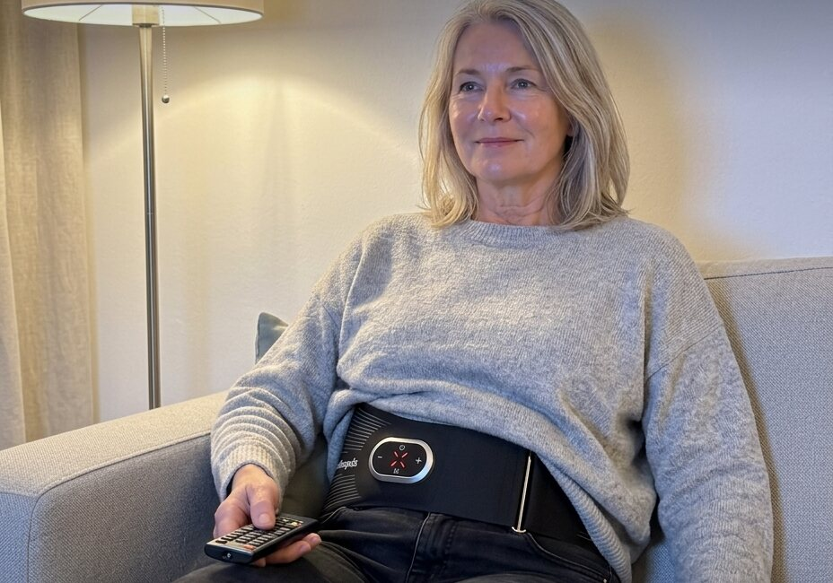
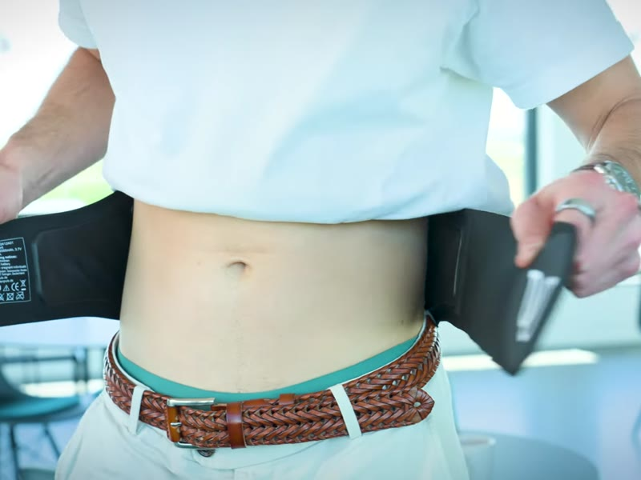
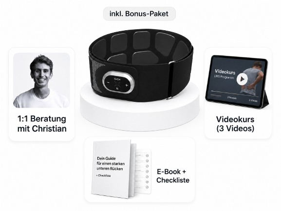

Warum so viele Menschen vor dieser Frage stehen
Rückenschmerzen gehören zu den häufigsten Beschwerden in Deutschland. In einer Befragung des Robert Koch-Instituts gaben 61,3 Prozent der Erwachsenen an, in den vergangenen zwölf Monaten Rückenschmerzen gehabt zu haben. Bei 15,5 Prozent waren sie chronisch.
Viele suchen irgendwann nach etwas, das sie selbst zu Hause tun können, und stoßen dabei auf Geräte mit elektrischen Impulsen. Fast immer fallen dann dieselben zwei Begriffe. Wer sie verwechselt, kauft leicht ein Gerät, das für etwas anderes gedacht ist.
TENS in Kürze
TENS arbeitet mit schwachen Impulsen an den Nerven und soll die Weiterleitung von Schmerzsignalen dämpfen. Man spürt ein Kribbeln, der Muskel bleibt dabei in Ruhe. Laut dem Institut für Qualität und Wirtschaftlichkeit im Gesundheitswesen (IQWiG) ist nicht belegt, dass Elektrotherapien chronische Rückenschmerzen lindern können. Wenn Sie eine Schmerzbehandlung suchen, sprechen Sie am besten mit Ihrer Ärztin oder Ihrem Arzt, auch über ein TENS-Gerät auf Rezept.
Was NMES anders macht
NMES steht für neuromuskuläre Elektrostimulation. Die Impulse sind stärker als bei TENS und bringen den Muskel dazu, sich anzuspannen und wieder zu lösen. Das ist Muskeltraining und keine Schmerzbehandlung.
- Die Muskeln spannen sich spürbar an und lösen sich wieder
- Es fühlt sich wie ein deutliches Ziehen an, danach kann es Muskelkater geben
- Als Gürtel läuft es auch im Sitzen, ohne dass Sie dafür Übungen machen
- Am Rücken liegen die Elektroden direkt über der Muskulatur, die Sie trainieren möchten
Kleine Studien deuten darauf hin, dass NMES Kraft und Ausdauer der Rumpfmuskulatur steigern kann. Die Arbeiten sind klein und betreffen andere Geräte.
Für wen NMES infrage kommt
NMES passt eher zu Ihnen, wenn Sie
- die Muskulatur am unteren Rücken trainieren möchten
- Übungen bisher nicht durchgehalten haben
- etwas suchen, das Sie im Sitzen zu Hause machen können
Gürtel für den Rücken kosten rund 55 bis 489 Euro. Die Unterschiede liegen vor allem bei den Elektroden, bei der Bedienung und bei der Betreuung nach dem Kauf.
Warum Rückentraining oft am Alltag scheitert
Bei Rückenschmerzen ohne klare Ursache ist aktives Training am besten belegt, und Krankengymnastik oder Rückenübungen bleiben dafür die erste Wahl. Schwierig wird es beim Dranbleiben: Laut einer Übersichtsarbeit im Fachblatt The Spine Journal machen bis zu 70 Prozent der Menschen mit chronischen Rückenschmerzen ihre verordneten Heimübungen nicht.
Ein NMES-Gurt senkt die Hürde: zweimal pro Woche 20 Minuten im Sitzen, zum Beispiel abends vor dem Fernseher. Er ersetzt keine Übungen, macht Training aber auch an den Tagen möglich, an denen sonst nichts passieren würde.
Der Wellenpuls LWS: NMES-Training für den unteren Rücken
Ein Gerät für dieses Ziel ist der Wellenpuls LWS, ein Trainingsgurt für den unteren Rücken. Sie legen ihn um die Taille, das Oberteil bleibt darüber, und schalten ihn ein.

- Zweimal pro Woche 20 Minuten, dann schaltet er von selbst ab
- Vier Tasten, keine App, kein Handy
- Etwas Wasser genügt, keine Klebepads
- 15 Stufen, Wärme per eigener Taste
- Akku, lädt per USB
- Passt von 78 bis 130 cm Bauchumfang
So legen Sie ihn an

Um die Taille legen und mit Klett festziehen.
Das ist im Preis enthalten

- Wellenpuls LWS mit Reiseetui und Zubehör
- 1:1-Gespräch mit Gründer Christian Senfleben
- Videokurs in 3 Videos und E-Book mit Startplan
- Kostenloser Versand, kein Abo
299 € 489 €mit Neukundenrabatt, Einmalzahlung, inkl. MwSt.
Tipp: Den Wellenpuls LWS gibt es aktuell mit einem Neukundenrabatt von 190 Euro. Sie zahlen 299 € statt 489 €, wenn Sie an der Kasse den Code eingeben.
So gehen Sie beim Kauf kein Risiko ein
- Sie haben ab Erhalt 30 Tage Zeit, den Gurt zu Hause ganz normal zu nutzen.
- Passt er nicht zu Ihnen, genügt eine E-Mail.
- Die Rücksendung ist mit dem Rücksendelabel von Wellenpuls kostenlos.
- Nach Eingang und Prüfung erstattet Wellenpuls den Kaufpreis auf demselben Zahlungsweg.